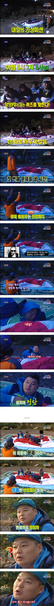

자다가도 미션을 성공함

자다가도 미션을 성공함
ㅋㅋㅋㅋㅋㅋㅋㅋㅋㅋ
어떤 미친사람들이 자는 사람들 깨우지도않고 문제를 내냐고 ㅋㅋㅋㅋㅋㅋㅋㅋ
어떤 미친사람이 맞추더라니까 ㅋㅋㅋㅋㅋㅋ
예능 공포특집중에 제일 무서웠던게 1박2일 닐리리맘보였는데ㅋㅋ
이수근 존나놀래서 강호동 끌어안음 본능적으로 최상위포식자에게 의지하는
ㅋㅋㅋㅋㅋㅋㅋㅋㅋㅋㅋ


뭐 신나게 한것도 아니고 존나 음산한 저음으로 ㅋㅋㅋㅋㅋㅋ
ㅋㅋㅋㅋㅋㅋ재밌었는데
그립다 덕분에 진짜 많이 웃었는데
진짜 벌써 근 20년이 다되가네. 세월 참 빠르다. 뱀이다 뱀이다 기상송이 귀에 아른거려 ㅋㅋ
?할때 표정 왤케 멍청해보이냐 ㅋㅋㅋㅋㅋㅋㅋ
???:우리는 제도권 교육을 안 받았잖아... 나 학교 다녔어?
학교는 다녔죠
(공부를 안했을 뿐)
얼굴 부은거 봐 ㅋㅋ
중간에 깬게 더 초릉초롱
24시간 술래잡기 같네
드립각 보고 꿈드립 쳣겟지 ㅋㅋ
ㅋㅋ얼굴 가린 사람 누구냐 갈색옷 ㅋㅋ
몽
와ㅋㅋㅋㅋ
ㅋㅋㅋㅋㅋㅋㅋㅋㅋㅋㅋ 표정
ㅋㅋㅋㅋㅋㅋㅋㅋㅋㅋㅋㅋㅋㅋㅋㅋㅋ
? 표정이 개웃기네 ㅋㅋㅋㅋㅋㅋㅋㅋㅋㅋㅋㅋㅋㅋㅋ
https://youtu.be/9dC5LqwrMXA?t=8774
만재도편에서 30분안에 자는지 강호동이랑 이수근 우스갯소리로 얘기했는데
스태프들이 진짜로 확인하러 온 거 ㅋㅋ
아직도 주말에 꾸준히 1박2일봄 ㅋㅋ 확실히 저때 날것의 맛이 있다고 생각하는데
늙어서 추억보정이 들어가는건지 진짜 옛날 예능을 못 따라가는건지 모르겠네
대본이라 한 들 요즘 예능은 감정을 공감이랍시고 쳐 내놓는 부분이 질질쳐 짜기나 하거나, 감동적인척, 존나 멋진척 이지랄하니 처음에나야 오~ 역시~ 이러면서 보지 그거 몇번만 봐도 관심 뚝 떨어짐.
공감이 지속적으로 되는 감정이 아니라 감정쓰레기통 보는 느낌임
난 순전히 즐겁거나 도움되면서도 사람들이 어떻게 살고 있는 가~ 같은 희망적인 것을 보고 싶은데..
지들끼리만 아는 세상, 지들끼리만 공감가는 이야기, 지들끼리만 하면서도 마치 니들도 해봐야된다는 식의 PPL 등등 공감이 안됨.
근데 이전 예능들은 솔직히 연예인들 중에도 망가질 정도로 굴리는 것도 있었을 테고, 최대한 날 것처럼 보이듯 연기하는 것도 있고, 그 모습에 웃고, 즐기고, 어려움을 극복하는 감동, 평소 모습에서 볼 수 있는 공감적인 부분, 같은 것들도 있기에 지속적으로 봄.
마치 평소에도 볼 수 있는 아저씨나, 친구 또는 동생 같은 느낌에서 조금 오버되는 느낌인거 인데다 충분히 즐거움을 주기 위함이라는 것에 치중되어 있는 게 느껴짐.
물론, 포맷이 비슷비슷한 것이라 이 또한 물리긴 해도 요즘 예능보다는 차라리 나음.
뭔가를 가르치려한다, 팔려고 한다 ( X ), 그냥 쥰나 웃기고 즐기는 모습을 그대로 보여주려고 노력한다. 단, 방송위에 안걸리게 ( O )
전국의 특산물, 문화, 체험, 직업 등등을 날것 그대로 보여주기도했고 쥰내 지독하게 굴리고 굶겨서 멤버들이 진심으로 눈에 불켜고 달려드니까 시청자들도 같은 마음으로 몰입되서 보는거고 실제로 드립이나 상황이 ㅈㄴ 골때리는것도 있었다고 생각함 지금은 뭐 저런식으로 현장에서 제대로 굴리는 헝그리 예능이 없으니까 다들 그렇게 배고프지도않고 힘들지도 않으니 테이블 쇼 되는거지
ㅋㅋㅋㅋㅋㅋㅋㅋㅋㅋㅋㅋㅋㅋ